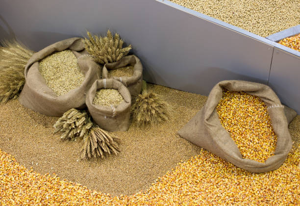
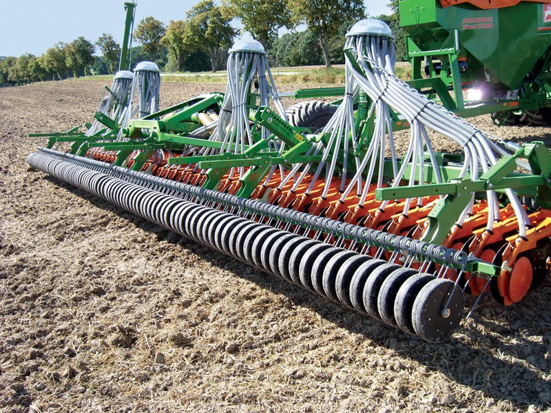
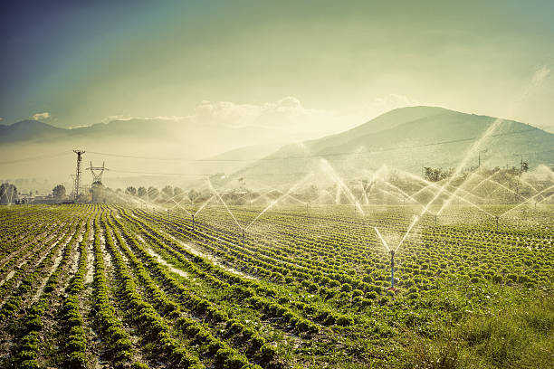
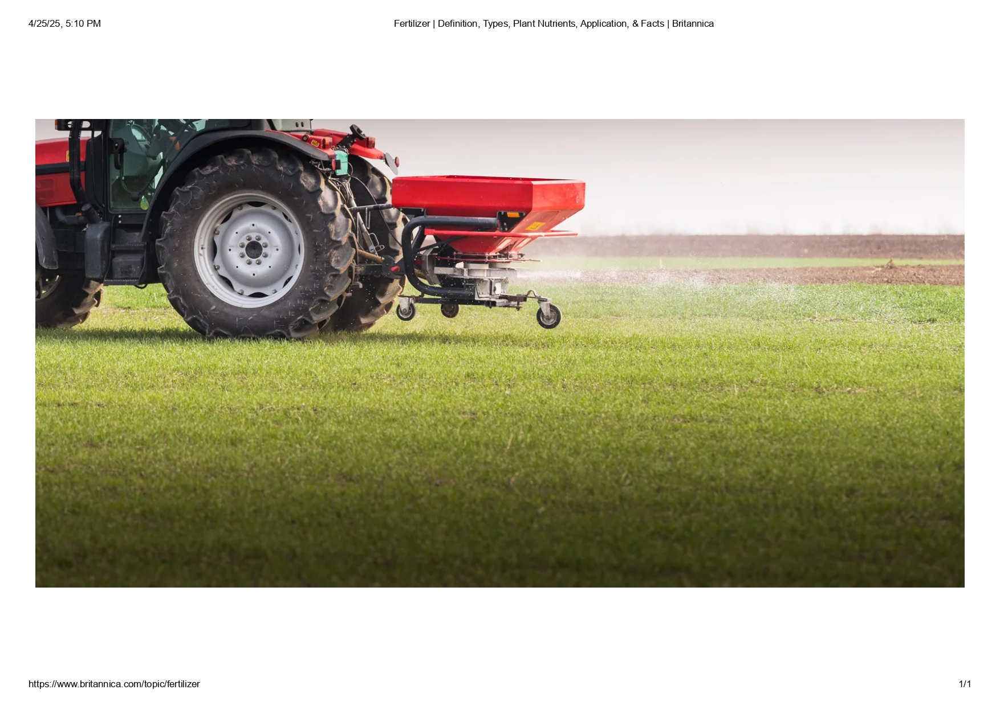
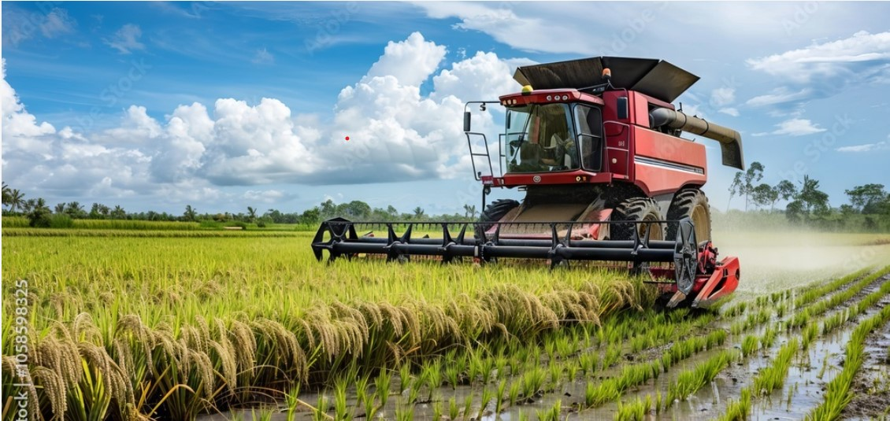
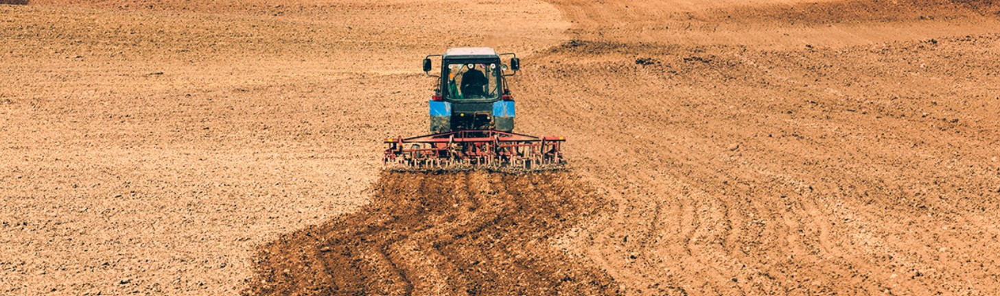

🌾 Wheat Farming Process
1. Land Preparation
Soil is plowed and leveled. Proper drainage ensures good root development and prevents water logging.

2. Seed Selection
Choose high-yielding, disease-resistant wheat varieties suited to the region and climate.
3. Sowing
Wheat is sown in rows using the drilling method during the Rabi season.
4. Irrigation
Irrigation is critical at stages like tillering and grain filling. Avoid over-irrigation to prevent diseases.
5. Fertilization
Apply nitrogen, phosphorus, and potassium based on soil testing. Use compost or organic manure to enrich the soil.
6. Weed and Pest Control
Control weeds with herbicides and manually if needed. Monitor for pests and apply eco-friendly pest control methods.

7. Harvesting
Harvest when the crop turns golden and moisture content is low. Use sickles or combine harvesters.
8. Post-Harvest Processing
Threshing, cleaning, drying, and storing are done to maintain quality and prevent spoilage.
